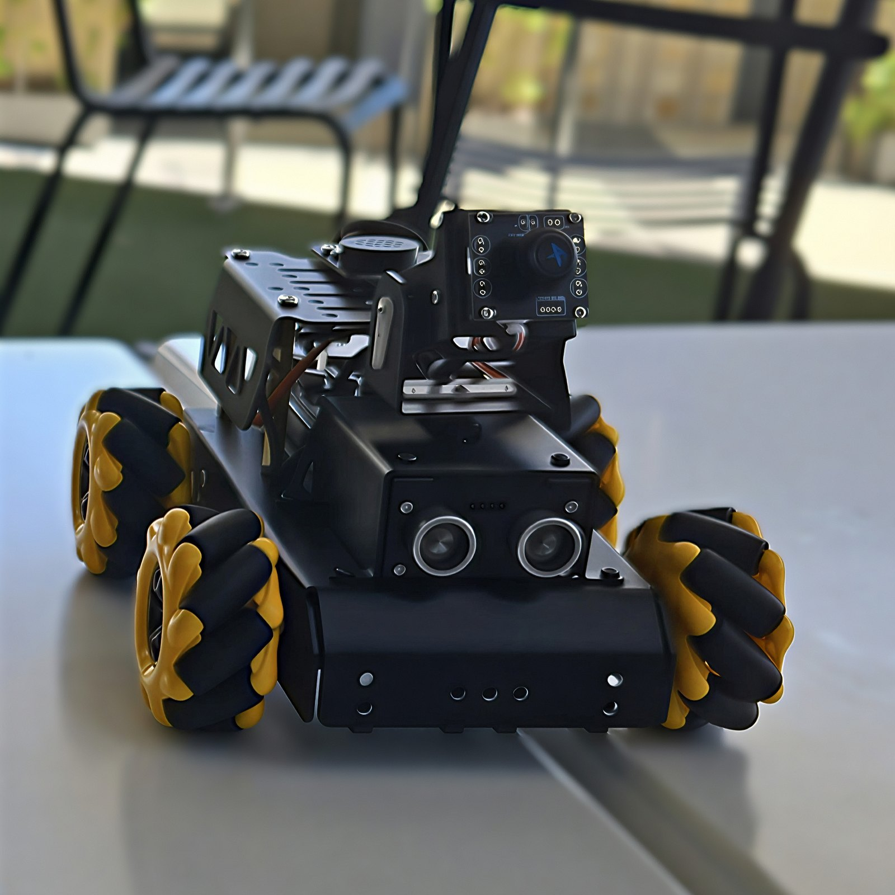

Brisbane, QLD · open to 2027 internships
Learning security by building it.
Interested in Blue teamSOC analystIdentity & accessGRCIT automation
I am a second-year Cybersecurity and AI student at QUT in Brisbane. This site collects the projects, lab notes and work experience behind the direction I am taking.
Who
Barry Sampath
My given name is Bharath; I use Barry professionally. Second-year QUT Bachelor of IT student. GPA 6.09 / 7.00, finishing December 2027.
Doing now
- ScienceGears
Cybersecurity & IT Automation Analyst, paid contract - Code Network
Engagement Officer - Coles Group
Customer Service Supervisor
Built
- ITDR home lab: Wazuh SIEM and Sysmon telemetry
- ClassQuest: 10 merged PRs and the People’s Choice Award
- LUNA: Raspberry Pi robot with vision and voice
Proof
- 3rd place CIMCTF 2026, team SushiShield
- People’s Choice Winter Hackathon 2026
- Resume, one page
About
A little about me
I grew up in the UAE and moved to Brisbane for university. Starting again in a new country made me comfortable asking basic questions and working through unfamiliar systems one piece at a time.
At QUT, I have been drawn to blue-team detection, identity and access, and the decisions behind security controls. I learn best when I can build something and keep useful notes on what happened.
Alongside study, I work on identity controls and automation for a live Microsoft 365 tenant at ScienceGears. My home lab gives me somewhere to practise the detection work that is difficult to access as a student.
You are viewing the shorter version. Read mode adds the detection walkthrough and detailed role bullets.
- Studying
- B. Information Technology, Cybersecurity & AI, QUT
- GPA
- 6.09 / 7.00 · Diploma 6.25 / 7.00
- Finishing
- December 2027
- Based
- Brisbane, QLD · from the UAE
- Focus
- Blue team · SOC · IAM · GRC
- Seeking
- 2027 internships and vacationer programs
From the home lab
What happens when Word spawns PowerShell
A busy endpoint produces thousands of process-creation events a day. Almost all of them are boring, which is the point: you cannot recognise the one that matters without knowing what ordinary looks like.
This is that stream, playing at real speed. It loops while it is on screen, and pauses if you hover it or scroll away.
One of three projects · ITDR home lab →
The rule behind it
One event, through my rule, to a response
Step through with the tabs or the arrow keys. Sample telemetry modelled on my lab; the rule is the shape I write them in.
The endpoint reports a process creation
Sysmon logs Event ID 1 on every process start. On its own this is noise. The signal lives in the parent-child relationship.
The parent process and command line make this event suspicious. Word starts PowerShell, which then requests a hidden window and an encoded command.
The rule, in local_rules.xml
It chains off Wazuh’s built-in Sysmon process-create rule and narrows on the parent. Level 12 puts it above the noise floor so it surfaces on the dashboard instead of settling into the archive.
The MITRE mapping gives the alert a standard technique name that another responder can recognise.
What the analyst actually sees
The dashboard card, roughly two seconds after the process starts.
- Rule
- 100210 · T1059.001 Command and Scripting Interpreter
- Agent
- Windows-Lab-Endpoint
- Process
- powershell.exe ← WINWORD.EXE
- Flags
- -nop · -w hidden · -enc
- Decoder
- windows_eventchannel
The severity colour is reserved for alerts, so it stays noticeable against the otherwise neutral interface.
Triage, in the order I work it
- Decode the payload. Base64 out of the encoded block first, because everything after this depends on what it was trying to do.
- Establish the document. Which file Word had open, where it came from, who else received it.
- Pull sibling events. Network connections and registry writes from the same process GUID inside the following minute.
- Contain or clear. Isolate the endpoint if the payload reached out. If an approved internal macro caused the alert, document and test an exception.
- Write it down. Every tuning decision goes in the log, or the next person inherits a rule nobody can explain.
Selected work
Three projects I can explain
Each case study covers the context, my contribution, the problems I hit and the evidence behind the result.
ClassQuest
A learning site that turns lecture material into playable quests. I contributed ten merged pull requests across the playable demo, frontend, upload security and cohort challenges.
The upload handler is the part I would start with. Student-supplied files create most of the site’s attack surface in one function.
Read the case study →
ITDR Home Lab
A Wazuh 4.9.2 server, Windows endpoint and Sysmon telemetry running on my laptop. The case study includes the four failures I hit before the first dashboard login.
Phase 1 is complete. Detection-rule development is the next phase when I return to the project.
Read the case study →
LUNA: TurboPi robot
A Raspberry Pi robot combining computer vision, offline voice, wireless control and PID-tuned movement on one platform.
This project taught me how quickly hardware exposes bad assumptions. It is also where I started documenting decisions while I worked.
Read the case study →
Experience
Work alongside full-time study
-
Apr 2026 to presentBrisbane, QLD
Paid contractCybersecurity & IT Automation Analyst
ScienceGears
- Reviewed identity security and access governance, then wrote prioritised remediation guidance.
- Managed MFA, Conditional Access and role-based access controls in Microsoft Entra ID.
- Built email-triage and IT workflow automations using AI-assisted processing and Python.
-
Mar 2026 to presentBrisbane, QLD
Volunteer committeeEngagement Officer
Code Network
- Coordinated venues, schedules and attendees for university technology events with up to 40 participants.
- Managed communication between stakeholders, volunteers and attendees.
- Promoted from Event Officer at the September 2026 AGM.
-
Apr to May 2026Brisbane, QLD
Program placementTechnology Consultant: Power Platform
DynamX Institute
- Built a Power Platform business system for a client scenario after analysing its requirements and processes.
- Presented the solution and its design choices to program assessors.
-
May 2025 to presentBrisbane, QLD
Part-timeCustomer Service Supervisor
Coles Group
- Supervised customer service operations and resolved escalated complaints during peak periods.
- Trained more than 20 team members on point-of-sale procedures, refunds and customer communication.
Skills
What I work with
Security
Programming & data
Systems & tools
Background
Education and selected training
Education
- Bachelor of Information Technology, QUT. Cybersecurity & AI, expected December 2027. GPA 6.09 / 7.00
- Diploma of Information Technology, QUT. Completed November 2025. GPA 6.25 / 7.00
Selected training
- Foundations of Cybersecurity, Google. Completed 2025
- CompTIA A+, Lumify Learn. In progress
- CS50P, Harvard / edX. In progress
- SC-900. Planned next
Competitions
- CIMCTF 2026: 3rd place with team SushiShield
- Winter Hackathon 2026: People’s Choice Award with team ClassQuest
Community
- Cyber in Motion: CTF events volunteer since April 2026
- QUT Guild: events and student engagement, August to November 2025
Try the terminal
A small, harmless security sandbox
These are common first commands and test strings from security work. The terminal only responds with text already stored on this page; it cannot run anything on your computer.
Type help to begin, or use cards to print all six examples.
nmap -sV scanme.nmap.org
Everyone’s first scan, run against the one host on the internet that explicitly asks to be scanned.
Off shift
What I do away from study and work
This section appears in night mode.
01
From the UAE to Brisbane
I grew up in Sharjah, went to school in Ajman and moved to Brisbane for university.
02
Chess
I like the mix of planning and uncertainty. You can understand the rules and still misread the person across the board.
03
Badminton and the gym
These are the two activities I currently keep up with. Badminton also gives my competitive side somewhere useful to go.
04
Learning slowly
Guitar is still at the early stage, and reading is paused until exams are finished.
You found the night shift. Switch back to day mode to hide this section.
Contact
Open to 2027 internships
I am interested in blue-team, SOC, identity, GRC and IT automation opportunities in Brisbane. My work rights are subject to student visa conditions.
Email is the easiest way to reach me. My résumé and public project history are linked here as well.